6 月 3 日：VISReg 等视觉表征论文归档
本页按日期归档近期论文，保留优先级、主题、来源与方法线索，方便回看同一批工作的研究脉络。
先读 VISReg。直接改进 JEPA/SSL 防 collapse 正则化，并报告 ImageNet-22K 下接近 DINOv2 OOD 表现。 其余论文按 P1/P2 与主题顺序扫读，重点看方法图、消融设置和是否能迁移到通用视觉表征。
论文索引
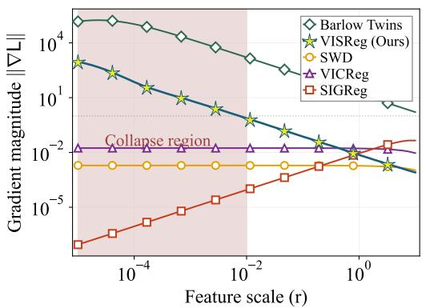
VISReg: Variance-Invariance-Sketching Regularization for JEPA training
高相关；详见方法、贡献和实验边界。
方法：直接改进 JEPA/SSL 防 collapse 正则化，并报告 ImageNet-22K 下接近 DINOv2 OOD 表现
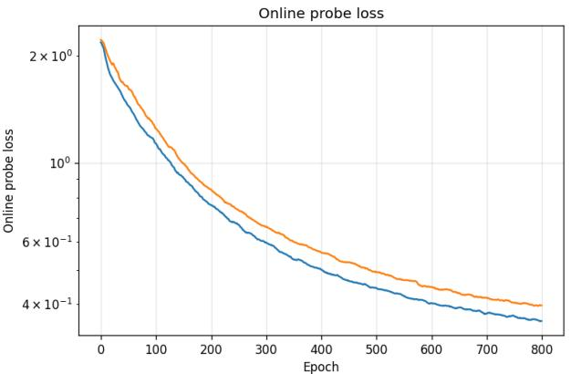
UR-JEPA: Uniform Rectifiability as a Regularizer for Joint-Embedding Predictive Architectures
高相关；详见方法、贡献和实验边界。
方法：同样针对 JEPA collapse，但从低维流形/rectifiability 角度替代 isotropic Gaussian 先验
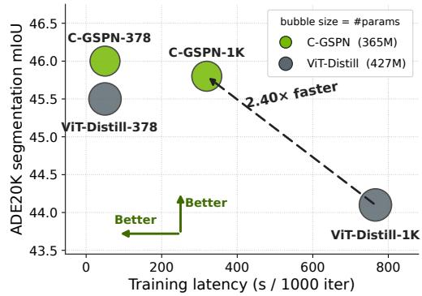
Scaling Parallel Sequence Models to Foundation-Scale Vision Encoders
高相关；详见方法、贡献和实验边界。
方法：面向视觉基础模型的近线性 2D spatial propagation encoder，目标是降低大分辨率预训练成本
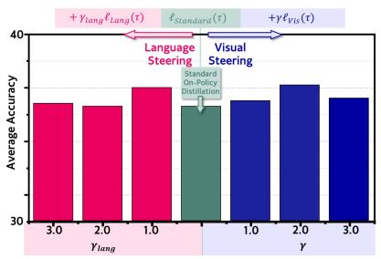
Decomposed On-Policy Distillation for Vision-Language Reasoning: Steering Gradients for Visual Grounding
高相关；详见方法、贡献和实验边界。
方法：把 VLM 蒸馏梯度拆成 language prior 与 visual grounding，直接处理视觉证据被语言先验淹没的问题
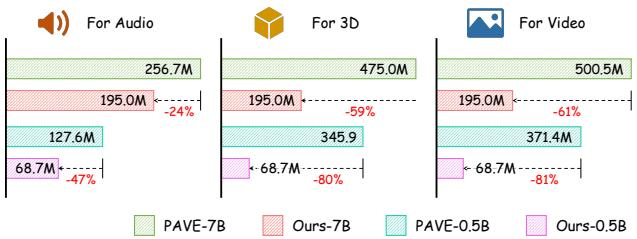
V-LynX: Token Interface Alignment for Video+X LLMs
高相关；详见方法、贡献和实验边界。
方法：提出 Video LLM 内部存在可复用 token interface，用未配对单模态数据对齐新模态到视频 token 流形
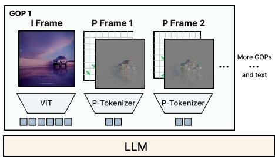
AdaCodec: A Predictive Visual Code for Video MLLMs
中高相关；详见方法、贡献和实验边界。
方法：把视频冗余建模为 reference frame + predictive P-token，直接减少重复视觉 token
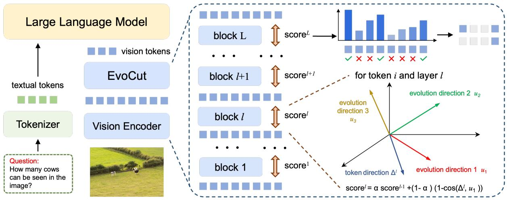
EvoCut: Multi-Layer Evolution-Aware Visual Token Compression for Efficient Large Vision-Language Models
中高相关；详见方法、贡献和实验边界。
方法：从 vision encoder 多层 token 演化方向估计重要性，比单层 attention/相似度压缩更贴近表征形成过程
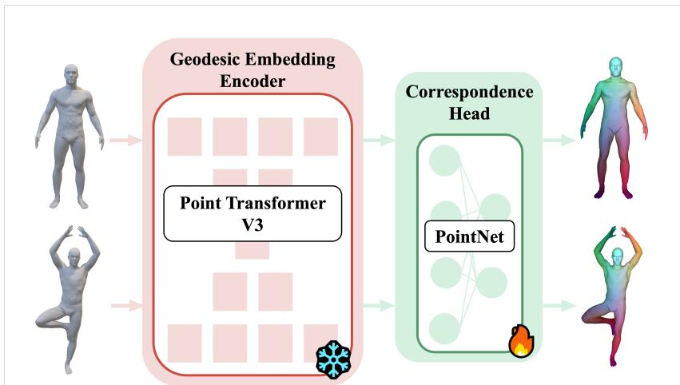
From Extrinsic to Intrinsic: Geodesic-Guided Representation Learning for 3D Geometric Data
中高相关；详见方法、贡献和实验边界。
方法：用内在 geodesic metric 预训练 3D 表征，强调拓扑/流形结构而非外在坐标或语义标签
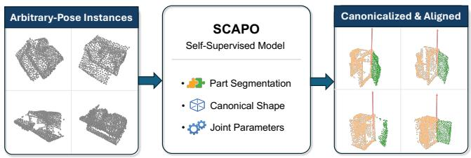
SCAPO: Self-Supervised Category-Level Articulated Pose Estimation from a Single 3D Observation
中相关；详见方法、贡献和实验边界。
方法：单帧 RGB-D 下用自监督分解 canonical geometry、part segmentation 与 articulation，方法信号可迁移到对象结构学习
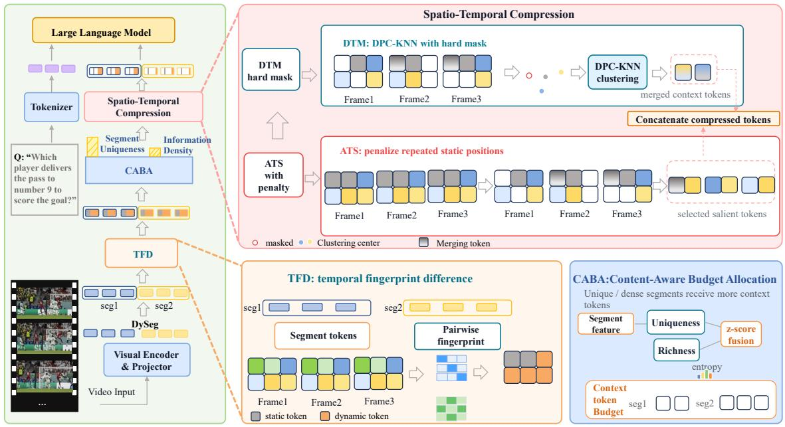
InfoMerge: Information-aware Token Compression for Efficient Video Large Language Models
中相关；详见方法、贡献和实验边界。
方法：训练免费的视频 token compression，用 segment-level temporal fingerprint 估计冗余和内容预算
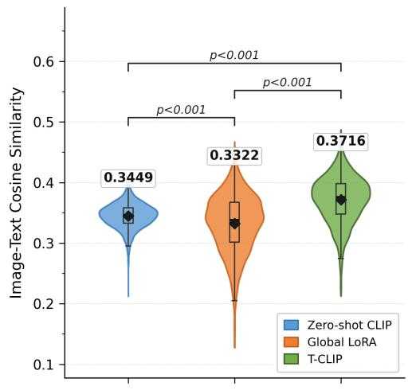
T-CLIP: Enabling Thermal Perception for Contrastive Language-Image Pretraining
中低相关；详见方法、贡献和实验边界。
方法：热成像是垂直模态，但 dual-LoRA 拆分全局场景与对象热签名的 CLIP adaptation 有方法借鉴价值